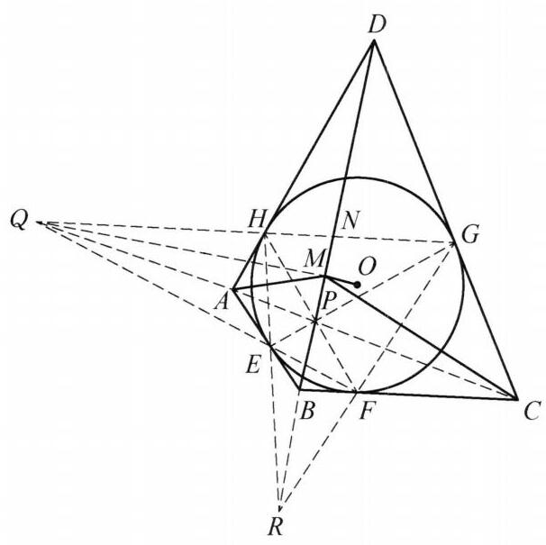

100 例 5：调和线束与内切圆切点角平分线
100.1 题目
设四边形 {ABCD} 的内切圆为圆 O ,过 O 作 {OM} \perp {BD} . 求证: {BD} 平分 \angle {AMC} .
100.2 参考解答
如图 7-4,设圆 O 与 {AB} , {BC},{CD},{DA} 分别相切于点 E, F, G , H ,连接 {AC} 与 {BD} 交于点 P . 由牛顿定理,知 {EG},{FH} 也过点 P . 设 {GH} 与 {FE} 的延长线交于点 Q,{HE} 与 {GF} 的延长线交于点 R . 因为 {EF} 为 B 关于圆 O 的极线, Q 在直线 {EF} 上,所以由配极原则知 Q 关于圆 O 的极线过点 B . 同理可得 Q 关于圆 O 的极线过 D ,于是直线 {BD} 是 Q 关于圆 O 的极线.

图 7-4
因为 {QHG},{QEF} 为圆 O 的割线, {HE} 与 {GF} 交于点 R ,所以 {PR} 为 Q 关于圆 O 的极线,于是 D, P, B, R 四点共线. 同理可得 Q, A, P, C 四点共线.
设 {HG} 与 {BD} 交于点 N ,由 {DR} 为 Q 关于圆 O 的极线,知 Q, N, H, G 为调和点列,则 {DQ},{DN},{DH},{DG} 为调和线束,于是 Q, A, P, C 也为调和点列.
连接 {QO} ,由 {BD} 为 Q 关于圆 O 的极线,知 {QO} \perp {BD} ,结合题设条件,知 Q , M, O 三点共线,故 \angle {QMD} = {90}^{ \circ } ,于是 {BD} 平分 \angle {AMC} .
原问题得证.
注:垂直结合角平分线容易想到调和点列，再结合牛顿定理及极线即可完成证明.
100.3 解题思路与分析
这段证明之所以让人觉得“费解”，是因为教科书采用的是“综合法”（正推）：直接抛出四个切点 E, F, G, H 和两个神秘的远方交点 Q, R，像变魔术一样把结论拼了出来。
如果我们换用“分析法”（从结论倒推），结合射影几何（极点与极线）的视角，你会发现每一步辅助线的引入都是被结论“逼”出来的必然选择。
100.3.1 第一步：破译结论（垂直 + 角平分线 = 调和线束）
我们先不看圆，只看结论：已知 OM \perp BD，求证 BD 平分 \angle AMC。
在射影几何中，有一条极其核心的转化准则： > 定理：若两条直线互相垂直（\angle QMP = 90^\circ），则它们平分某个角（\angle AMC）的充要条件是：这四条直线构成调和线束 M(Q, P; A, C) = -1。
- 既然题设给了 OM \perp BD（即 \angle OMP = 90^\circ，其中 P = AC \cap BD），且要证 MP 是 \angle AMC 的内角平分线，那么直线 MO 必然就是 \angle AMC 的外角平分线！
- 线束的调和性是由点列的调和性决定的。如果延长 OM 交直线 AC 于某个点 Q，那么结论“MP 平分 \angle AMC”就完全等价于： 在直线 AC 上，点 Q、点 P 与 A, C 构成调和点列，即 (Q, P; A, C) = -1。
【思维推进】：现在问题变成了——直线 OM 与 AC 的交点 Q 到底是什么来头？为什么它能和 P, A, C 构成调和点列？
100.3.2 第二步：寻找点 Q 的真实身份（几何定性）
我们来审视直线 OM：它过圆心 O，并且垂直于直线 BD。
在圆的极点极线理论中，“过圆心且垂直于某条直线”是一个强烈的信号： * 任何一条直线 BD 关于圆 O 的极点，一定落在过圆心 O 且垂直于 BD 的直线上（即直线 OM 上）！ * 换句话说，直线 OM 就是直线 BD 的极点所在的轨迹。
既然我们刚才期望的点 Q 是直线 OM 与 AC 的交点，而现在又知道 BD 的极点必然在直线 OM 上，一个大胆而自然的猜想就诞生了： > 猜想：点 Q 会不会恰好就是直线 BD 关于圆 O 的极点？
如果 Q 真的是 BD 的极点，那么根据定义，OQ \perp BD。又因为 OM \perp BD，所以 O, M, Q 自然三点共线！
【思维推进】：如果定义 Q 为 BD 的极点，我们能保证： 1. Q 一定在直线 AC 上吗？ 2. (Q, P; A, C) = -1 一定成立吗？
100.3.3 第三步：激活圆外切四边形的“天然脚手架”
为了验证关于极点 Q 的两个问题，我们必须把“四边形 ABCD 外切于圆 O”这个核心条件翻译成极线语言。一旦标出四个切点 E, F, G, H，整个图形立刻进入了射影几何中最经典的布里安生（Brianchon）与布洛卡（Brocard）结构：
- 怎么画出 BD 的极点 Q？
- 点 B 是切线 AB, BC 的交点 \implies B 的极线是切点弦 EF。
- 点 D 是切线 AD, CD 的交点 \implies D 的极线是切点弦 GH。
- 根据配极原则（连接两点的直线，其极点是两点极线的交点），直线 BD 的极点 Q，必然是 B 的极线（EF）与 D 的极线（GH）的交点！
- 这就是为什么证明一上来就令 Q = EF \cap GH——作者其实是在强行把“BD 的极点”作出来！
- 为什么 Q 会在直线 AC 上，且 (Q, P; A, C) = -1？ 这里其实有一个比原证明更深刻、更一步到位的看法（对合与极线）：
- 既然 Q 是 BD 的极点，考虑从点 D 发出的线束。
- 直线 DA 和 DC 是过点 D 的两条切线（切点为 H, G）。在极线理论中，过圆外一点 D 作两条切线 DH, DG，再任作一条割线（或者连接 D 与极点 Q），则直线 DQ、直线 DB 与两条切线 DH, DG 必然构成调和线束！
- （原证明为了解释这一点，特意用完全四边形 EFGH 的布洛卡定理引入了点 R 和点 N，指出 Q, N; H, G 调和，再用 D 投影得到 D(Q, B; A, C) = -1。其实在竞赛中，圆的切点弦与极线直接蕴含了 (Q, N; H, G) = -1，根本不需要点 R 的介入。）
- 既然线束 D(Q, B; H, G)（即 D(Q, P; A, C)）是调和线束，拿直线 AC 去截这束线，只要 Q 在直线 AC 上，就立刻得到 (Q, P; A, C) = -1！
- 那么，Q 为什么一定在直线 AC 上？（牛顿定理的本质）
- 同理，点 A 的极线是 EH，点 C 的极线是 FG。因此，对角线 AC 的极点就是 R = EH \cap FG。
- 在圆内接四边形 EFGH 中，由布洛卡定理（Brocard’s Theorem），三个对边交点 P(EG \cap FH)、Q(EF \cap GH)、R(EH \cap FG) 构成关于圆 O 的自配极三角形 \triangle PQR！
- 这意味着：R 的极线就是直线 PQ。
- 但刚才我们又知道，R 是对角线 AC 的极点（即 R 的极线是 AC）。
- 两条极线重合，说明 A, C, P, Q 四点共线！（同理，B, D, P, R 四点共线）。
100.3.4 总结：还原命题人与解题人的“思维链条”
如果把书上的证明拆掉包装，它的真实推导路线图是这样的：
\begin{aligned} &\text{要证 } BD \text{ 平分 } \angle AMC \text{ (已知 } OM \perp BD \text{)} \\ \Longleftarrow \quad &\text{需证 } M(O, P; A, C) = -1 \\ \Longleftarrow \quad &\text{设 } Q = OM \cap AC \text{，需证点列 } (Q, P; A, C) = -1 \\ \Longleftarrow \quad &\text{注意到 } OM \perp BD \text{，锁定 } Q \text{ 的身份为直线 } BD \text{ 关于圆 } O \text{ 的极点} \\ \Longleftarrow \quad &\text{利用外切四边形切点 } E,F,G,H \text{，将 } BD \text{ 的极点具体化为 } Q = EF \cap GH \\ \Longleftarrow \quad &\text{由圆内接完全四边形的极线性质，自动获得 } Q \in AC \text{ 且 } D(Q, P; A, C) = -1 \end{aligned}
100.3.5 破除“费解感”的两个关键模型
今后遇到类似的圆外切四边形或内接四边形问题，只要脑海中有以下两个打包好的板块，就不需要像书上那样一步步零碎地推导点 R 和点 N：
- 直角 + 调和 = 角平分线：看到“过某点作垂线”且要证“平分某角”，立刻去寻找这四条线与某条横截线的交点，将其转化为证明调和点列。
- 圆外切四边形的配极字典： 只要给出圆外切四边形 ABCD 及切点 E, F, G, H，以下性质是绑定的整体：
- 两条对角线 AC, BD 与两条切点弦 EG, FH 四线共点于 P（牛顿定理）。
- 对角线 BD 的极点 Q = EF \cap GH 一定在另一条对角线 AC 上；对角线 AC 的极点 R = EH \cap FG 一定在 BD 上。
- 自带调和点列：在直线 AC 上，天然有 (Q, P; A, C) = -1；在直线 BD 上，天然有 (R, P; B, D) = -1。
你看，如果把“在圆外切四边形中，对角线 BD 的极点 Q 落在 AC 上且满足 (Q, P; A, C) = -1”当成一个已知的二级结论（基本构件），那么这道题其实只有一句话：因为 Q 是 BD 的极点，所以 OQ \perp BD，从而 OM 过点 Q，由于 (Q, P; A, C) = -1 且 \angle QMP = 90^\circ，故 MP 平分 \angle AMC。书上的长篇大论，其实只是在现场从头证明这个二级结论而已。
100.4 分步证明
100.4.1 步骤 0：已知条件与几何构型
设四边形 ABCD 的内切圆为圆 O，四边分别切于点 E, F, G, H。 连接对角线 AC, BD。过圆心 O 作 OM ⊥ BD 于点 M。 连接 MA, MC。求证：直线 BD 平分 ∠AMC。
100.4.2 步骤 1：① 牛顿定理与配极原则：BD 为 Q 的极线
连接 AC 与 BD 交于点 P。由牛顿定理，切点弦 EG 与 FH 亦必过点 P。 设切点连线 GH 与 FE 的延长线交于点 Q。 因为弦 EF 为切线交点 B 关于圆 O 的极线，且 Q 在直线 EF 上，由配极原则，点 Q 关于圆 O 的极线必过点 B。 同理，弦 GH 为点 D 的极线，故点 Q 关于圆 O 的极线亦过点 D。 因此，直线 BD 即为点 Q 关于圆 O 的极线。
100.4.3 步骤 2：② 自极三角形对偶：D,P,B,R 与 Q,A,P,C 共线
设切点弦 HE 与 GF 的延长线交于点 R。 在内接四边形 EFGH 中，P = EG ∩ FH，Q = GH ∩ FE，R = HE ∩ GF 构成圆 O 的自极三角形 △PQR。 由自极三角形性质，点 Q 的极线即为直线 PR。结合第 ① 步，直线 BD 与 PR 重合，即 D, P, B, R 四点共线！ 同理，切线交点 A 的极线为 HE（过 R），切线交点 C 的极线为 FG（过 R）。由配极原则，点 R 的极线必过 A 与 C（即直线 AC）。 而在自极三角形中点 R 的极线即为直线 PQ，故直线 PQ 与 AC 重合，即 Q, A, P, C 四点共线！
100.4.4 步骤 3：③ 完全四边形截线：(Q, P; A, C) 为调和点列
设割线 QHG 与直线 BD 交于点 N。 由完全四边形的基本调和性质，割线上的点列 (Q, N; H, G) = -1 为调和点列。 从顶点 D 发出投影线束，知 D(Q, N; H, G) = -1 构成调和线束。 用截线 Q-A-P-C 去截该调和线束： 因为 DQ ∩ 截线 = Q，DN ∩ 截线 = P，DH (即 DA) ∩ 截线 = A，DG (即 DC) ∩ 截线 = C。 由透视投影保持调和交叉比不变，立即导出截线上的四个点构成调和点列： (Q, P; A, C) = -1。
100.4.5 步骤 4：④ 极点连径正交：Q, M, O 三点共线且 QM ⊥ BD
连接极点 Q 与圆心 O。 由极点与极线的基本正交性质：圆心与极点的连线垂直于该极点对应的极线。因为直线 BD 为点 Q 的极线，所以必有 QO ⊥ BD。 又由已知条件，过圆心 O 作 OM ⊥ BD 且垂足为 M。 过定点 O 向直线 BD 所引垂线唯一，垂足均为 M，故垂线 OM 与垂线 QO 必在同一直线上！ 由此导出：Q, M, O 三点共线，且垂线段 QM ⊥ BD（即 QM ⊥ MP），在点 M 处形成直角 ∠QMD = 90°。
100.4.6 步骤 5：⑤ 调和线束正交定理：BD 平分 ∠AMC（证毕）
以垂足 M 为顶点，连接共线的调和点列 Q, A, P, C，构成调和线束 M(Q, P; A, C) = -1。 在这一调和线束中，射线 MQ 与射线 MP 是一对共轭射线。 由第 ④ 步结论，共轭射线相互垂直，即 MQ ⊥ MP（∠QMP = 90°）。 根据调和线束正交定理：若调和线束的两条共轭射线互相垂直，则这两条共轭射线恰好平分另外两条射线所夹的角及其外角！ 因此，射线 MP 必平分 ∠AMC，即 ∠PMA = ∠PMC。 由于点 P 位于直线 BD 上，射线 MP 即为直线 BD，故直线 BD 严格平分 ∠AMC。 原命题圆满得证！